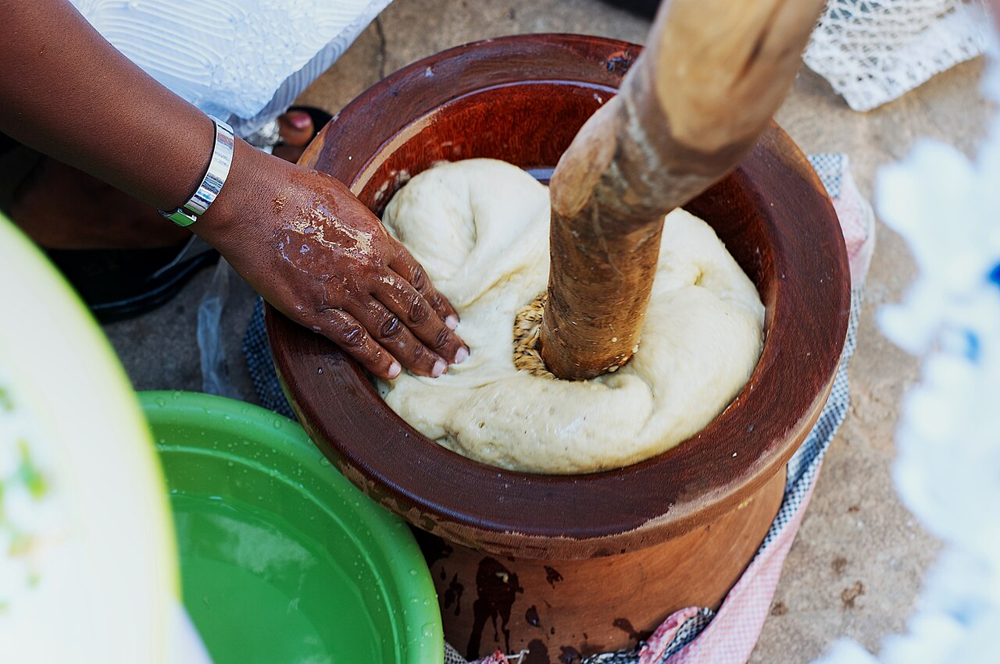

Home
Fufu Recipe

Description
Fufu is a smooth, stretchy staple food from West Africa, made by boiling and pounding starchy vegetables like cassava, yams, or plantains. It’s typically served with soups or stews and eaten by hand.
Ingredients
Steps
- Peel the cassava and plantain and wash
- Cut into small sizes
- Place the pieces in a pot, add enough water to cover them, and boil until soft
- Use a wooden mortar and pestle to pound the boiled cassava until smooth and stretchy.